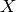

networkx.algorithms.bipartite.clustering.average_bipartite_clustering¶
- networkx.algorithms.bipartite.clustering.average_bipartite_clustering(G, nodes=None, mode='dot')¶
Compute the average bipartite clustering coefficient.
A clustering coefficient for the whole graph is the average,

where
 is the number of nodes in
is the number of nodes in  .
.Similar measures for the two bipartite sets can be defined [R57]

where  is a bipartite set of
.Parameters : G : graph
A bipartite graph
nodes : list or iterable, optional
A container of nodes to use in computing the average. The nodes should be either the entire graph (the default) or one of the bipartite sets.
mode : string
The pariwise bipartite clustering method. It must be “dot”, “max”, or “min”
Returns : clustering : float
The average bipartite clustering for the given set of nodes or the entire graph if no nodes are specified.
See also
bipartite_clustering, average_clustering
Notes
The container of nodes passed to this function must contain all of the nodes in one of the bipartite sets (“top” or “bottom”) in order to compute the correct average bipartite clustering coefficients.
References
[R57] (1, 2) Latapy, Matthieu, Clémence Magnien, and Nathalie Del Vecchio (2008). Basic notions for the analysis of large two-mode networks. Social Networks 30(1), 31–48. Examples
>>> G=nx.star_graph(3) # path is bipartite >>> nx.average_bipartite_clustering(G) 0.75 >>> X,Y=nx.bipartite_sets(G) >>> nx.average_bipartite_clustering(G,X) 0.0 >>> nx.average_bipartite_clustering(G,Y) 1.0